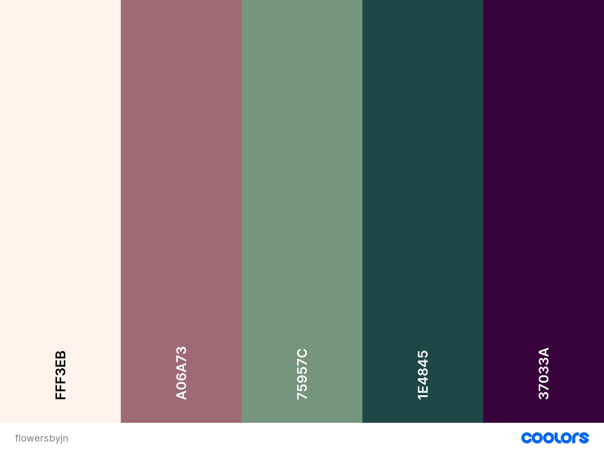

Idea for Website
Purpose
The purpose of this project is to help Jeanette Corona showcase her floral designs and services.
Font Styles
Font styles I have choosen:
This font is for the TITLE PAGE
This font is for PARAGRAPHS
This font is for HEADERS
Color Scheme
For color scheme I wanted a more playful pallet.
Measuring Progress
I will be measuring progress by setting goals every week what I want
for the website. I will then show the final draft to the "client" Jeanette Newby,
and others for their opinion how I can approve the website.
Below is the milestones and the time it should take for each milestone.
Milestone 1 Creating the outline of the pages (timelimit 2 week2)
Milestone 2 Completion of main page (timelimit 2 weeks)
Milestone 3 ComplSetion of second page (timelimit 2 weeks)
Milestone 4 Completion of third (timelimit 2 weeks)